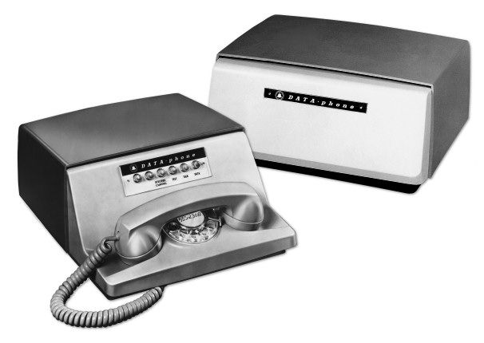
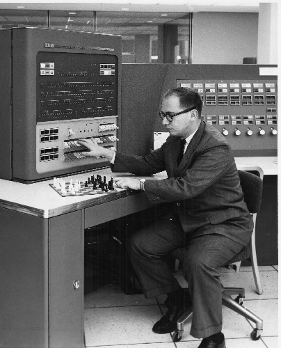

1937: The idea of a theoretical computing machine is thought of
by Alan Turing
1937: The idea of a theoretical computing machine is thought of
by Alan Turing
1939: The Complex Number Calculator (CNC) is completed. Scientist
George Stibitz first reveals it in 1940, at the American Mathematical Society
Conference. Described as the first example of remote access computing.

1958: Bell Labs successfully invents the very first modem, which
converts digital signals to electrical signals, continuously. This allows
computers to communicate.

1958: IBM jumps into the industry by starting to manufacture electric
computers.